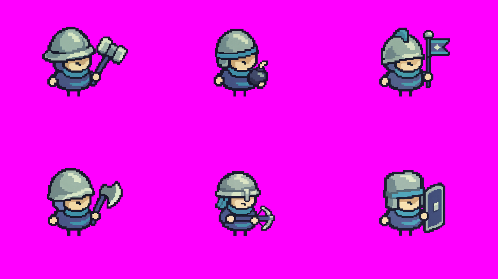
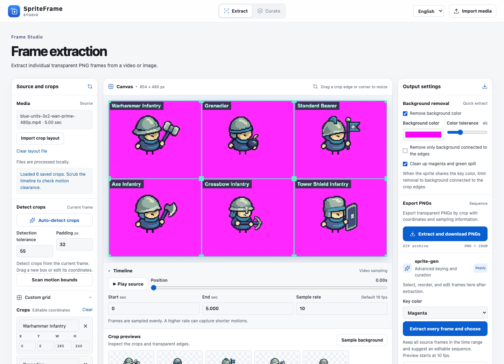
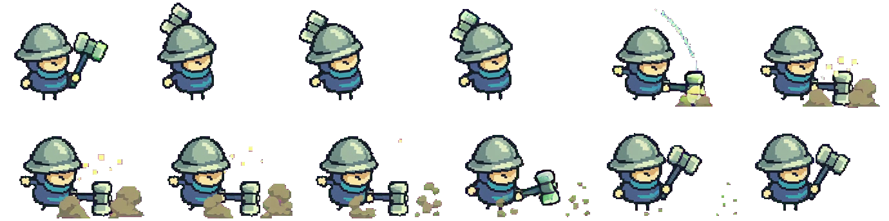
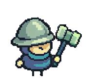
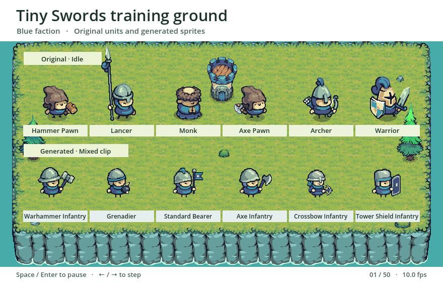
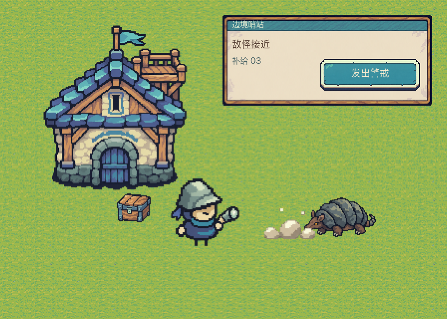

Compose one first frame
Give each unit a fixed cell and foot anchor. Submit the board with a motion prompt for each cell.
Open the source files →Learn a pixel-art style, animate a roster in one clip, and turn the footage into transparent frames. Then see how the new units look in Godot.
This example follows the same six units from the reference board to the final export. Reproduce the extraction with the included MP4 and layout JSON.

Give each unit a fixed cell and foot anchor. Submit the board with a motion prompt for each cell.
Open the source files →
Map the grid to the video, sample at 10 fps and remove the magenta key and edge spill.
Run the extraction →Review the sequence in SpriteFrame and keep the poses that show the action clearly.
See frame review and exports →The Warhammer Infantry sheet and GIF use the same 12 selected frames from the mixed clip. Each transparent cell keeps a fixed size and foot anchor. The export manifest records the source index, rectangle and duration of each frame.


Both rows stand on Tiny Swords terrain in the running Godot scene. Line up their feet to inspect proportions, equipment silhouettes and the edges around a fast-moving weapon.
The top row loops original idle animations. The bottom row plays the generated mixed-action clip. Pause or step through the local scene to inspect any pose.

The Frontier Outpost example carries the same camera angle and material palette into a building, an enemy, props, terrain, UI and an impact effect.
